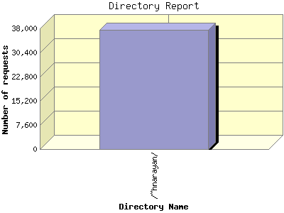

Report generated by Analog 6.0 and Report Magic 2.21
|
Web Server Statistics for "Harish Narayanan (hnarayan) - March 2008" Report generated by Analog 6.0 and Report Magic 2.21 |
The Directory Report analyzes accesses to this web site's directories. This information can be useful in determining the most requested areas.
This report shows all results. This report is sorted by number of requests.

| Directory Name | Number of requests | Percentage of the bytes | |
|---|---|---|---|
| 1. | /~hnarayan/ | 37,543 | 100.00% |
| /~hnarayan/downloads/ | 1,092 | 49.39% | |
| /~hnarayan/downloads/talks/ | 716 | 32.31% | |
| /~hnarayan/downloads/talks/talk10/ | 70 | 8.71% | |
| /~hnarayan/downloads/talks/talk11/ | 53 | 4.98% | |
| /~hnarayan/downloads/talks/talk14/ | 19 | 3.16% | |
| /~hnarayan/downloads/talks/talk12/ | 45 | 2.46% | |
| /~hnarayan/downloads/talks/talk13/ | 41 | 1.96% | |
| /~hnarayan/downloads/talks/talk2/ | 53 | 1.96% | |
| /~hnarayan/downloads/talks/talk8/ | 43 | 1.58% | |
| /~hnarayan/downloads/talks/talk4/ | 58 | 1.50% | |
| /~hnarayan/downloads/talks/talk5/ | 51 | 1.38% | |
| /~hnarayan/downloads/talks/talk3/ | 57 | 1.38% | |
| /~hnarayan/downloads/talks/talk9/ | 46 | 1.00% | |
| /~hnarayan/downloads/talks/talk1/ | 56 | 0.64% | |
| /~hnarayan/downloads/talks/defence/ | 1 | 0.59% | |
| /~hnarayan/downloads/talks/talk7/ | 54 | 0.42% | |
| /~hnarayan/downloads/talks/talk15/ | 1 | 0.35% | |
| /~hnarayan/downloads/talks/talk6/ | 48 | 0.24% | |
| /~hnarayan/downloads/papers/ | 208 | 14.63% | |
| /~hnarayan/downloads/papers/dissertation/ | 27 | 8.91% | |
| /~hnarayan/downloads/posters/ | 65 | 2.28% | |
| /~hnarayan/downloads/posters/poster1/ | 47 | 2.28% | |
| /~hnarayan/downloads/info/ | 58 | 0.16% | |
| /~hnarayan/downloads/projects/ | 17 | 0.00% | |
| /~hnarayan/images/ | 15,197 | 24.84% | |
| /~hnarayan/images/photos/ | 6,688 | 15.89% | |
| /~hnarayan/images/photos/paintings/ | 1,534 | 3.87% | |
| /~hnarayan/images/photos/gradsymp07/ | 1,178 | 3.19% | |
| /~hnarayan/images/photos/portraits/ | 486 | 1.53% | |
| /~hnarayan/images/photos/thumbnails/ | 2,110 | 0.81% | |
| /~hnarayan/images/photos/sos/ | 829 | 0.38% | |
| /~hnarayan/images/research/ | 4,795 | 7.12% | |
| /~hnarayan/images/research/movies/ | 99 | 1.92% | |
| /~hnarayan/images/research/highlights/ | 1,588 | 1.26% | |
| /~hnarayan/images/research/highlights-grey/ | 45 | 0.01% | |
| /~hnarayan/images/research/highlights-white/ | 37 | 0.00% | |
| /~hnarayan/images/pages/ | 433 | 1.49% | |
| /~hnarayan/images/pages/evaluations/ | 38 | 0.03% | |
| /~hnarayan/images/icons/ | 3,209 | 0.34% | |
| /~hnarayan/images/icons/darkgrey/ | 1,482 | 0.16% | |
| /~hnarayan/images/icons/grey/ | 922 | 0.10% | |
| /~hnarayan/images/icons/lightgrey/ | 768 | 0.07% | |
| /~hnarayan/images/icons/small/ | 6 | 0.00% | |
| /~hnarayan/images/campus/ | 26 | 0.00% | |
| /~hnarayan/images/symp07/ | 5 | 0.00% | |
| /~hnarayan/Backup/ | 5,429 | 19.84% | |
| /~hnarayan/Backup/02Second/ | 3,774 | 15.87% | |
| /~hnarayan/Backup/02Second/images/ | 2,730 | 8.94% | |
| /~hnarayan/Backup/02Second/downloads/ | 199 | 6.48% | |
| /~hnarayan/Backup/02Second/gallery/ | 181 | 0.01% | |
| /~hnarayan/Backup/03Third/ | 968 | 2.19% | |
| /~hnarayan/Backup/03Third/v6/ | 118 | 1.91% | |
| /~hnarayan/Backup/03Third/inspiration/ | 219 | 0.11% | |
| /~hnarayan/Backup/03Third/v7/ | 78 | 0.06% | |
| /~hnarayan/Backup/03Third/v2/ | 141 | 0.04% | |
| /~hnarayan/Backup/03Third/v1/ | 111 | 0.02% | |
| /~hnarayan/Backup/03Third/v5/ | 71 | 0.02% | |
| /~hnarayan/Backup/03Third/v4/ | 60 | 0.01% | |
| /~hnarayan/Backup/03Third/v3/ | 66 | 0.01% | |
| /~hnarayan/Backup/03Third/simplicity/ | 22 | 0.01% | |
| /~hnarayan/Backup/03Third/tests/ | 30 | 0.00% | |
| /~hnarayan/Backup/03Third/scripts/ | 22 | 0.00% | |
| /~hnarayan/Backup/03Third/nav-images/ | 12 | 0.00% | |
| /~hnarayan/Backup/Symposium/ | 30 | 1.20% | |
| /~hnarayan/Backup/01First/ | 489 | 0.53% | |
| /~hnarayan/Backup/01First/broken/ | 223 | 0.19% | |
| /~hnarayan/Backup/01First/logs/ | 49 | 0.19% | |
| /~hnarayan/Backup/01First/images/ | 34 | 0.01% | |
| /~hnarayan/Backup/Sitemap/ | 76 | 0.04% | |
| /~hnarayan/Backup/Sitemap/sitemap_gen-1.4/ | 39 | 0.02% | |
| /~hnarayan/Backup/Was-CGI-data/ | 43 | 0.01% | |
| /~hnarayan/Backup/Older/ | 12 | 0.00% | |
| /~hnarayan/scripts/ | 1,247 | 1.91% | |
| /~hnarayan/layout/ | 10,419 | 0.74% | |
| /~hnarayan/layout/images/ | 7,932 | 0.28% | |
| /~hnarayan/layout/images/cloud/ | 6,381 | 0.12% | |
| /~hnarayan/layout/images/gallery/ | 700 | 0.09% | |
| /~hnarayan/mirror/ | 203 | 0.08% | |
| /~hnarayan/mirror/usnews_images/ | 55 | 0.01% | |
| /~hnarayan/mirror/psn-article-local Files/ | 49 | 0.00% | |
| /~hnarayan/advance/ | 59 | 0.03% | |
| /~hnarayan/advance/simplicity-two-point-oh-two/ | 22 | 0.01% | |
| /~hnarayan/advance/simplicity-two-point-oh-two/layout/ | 10 | 0.00% | |
| /~hnarayan/advance/simplicity-two-point-oh-two/example-images/ | 4 | 0.00% | |
| /~hnarayan/advance/layout/ | 18 | 0.00% | |
| /~hnarayan/advance/layout/images/ | 12 | 0.00% | |
| /~hnarayan/advance/example-images/ | 3 | 0.00% | |
| /~hnarayan/site/ | 92 | 0.02% | |
| /~hnarayan/krishna/ | 53 | 0.02% | |
| /~hnarayan/krishna/two/ | 25 | 0.01% | |
| /~hnarayan/krishna/two/layout/ | 11 | 0.01% | |
| /~hnarayan/krishna/one/ | 2 | 0.00% | |
This report was generated on May 20, 2008 21:39.
Report time frame March 1, 2008 00:00 to March 31, 2008 23:58.
| Web statistics report produced by: | |
 Analog 6.0 Analog 6.0 |  Report Magic 2.21 Report Magic 2.21 |